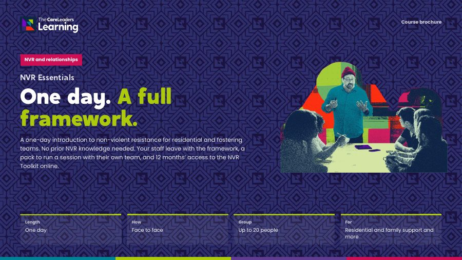

One day. A full framework.
A one-day introduction to non-violent resistance for residential and fostering teams. No prior NVR knowledge needed. Your staff leave with the framework, a pack to run a session with their own team, and 12 months’ access to the NVR Toolkit online.
- Length
- One day
- How
- Face to face
- Group
- Up to 20 people
- For
- Residential and family support and more

When a young person’s behaviour escalates, staff often fall back on instinct, and each shift responds differently. Services need one shared way to respond to violence, aggression and coercion that keeps adults safe and the relationship intact.
What changes
- Use one framework and one language for violence, aggression and coercion
- Handle the hot moment with a protocol rather than instinct
- Make reconciliation gestures routine rather than forgotten
- Run a first NVR session with their own team within a month
- Adults who stay calm and present when things escalate
- The same response from every adult, whoever is on shift
- Repair after a hard moment, so the relationship is not left broken
- Adults who resist the behaviour, never the child
- What NVR is and why it works
- The seven pillars, and the three dimensions of presence
- De-escalation: cold-iron lines, baskets and the hot-moment protocol
- Reconciliation gestures and acts of resistance
- How to run a first NVR session with their own team
- Residential managers and staff in children’s homes
- Fostering team leaders, supervising social workers and foster carers
- Early help and family workers coaching parents
- Commissioners deciding whether NVR is right for their service
Session by session
 Story
Story Theory
Theory Action
Action
Every part opens with a real story, adds the evidence behind it and ends with something people use the next day. Open a part to see what happens.
1The NVR stance
Morning. What non-violent resistance is, where it comes from, and the framework on one page: connection before correction, parental presence and the seven pillars, with the evidence and how NVR fits Ofsted expectations.
 You leave with The NVR framework on one page, with the seven pillars
You leave with The NVR framework on one page, with the seven pillars
2De-escalation
Morning. Strike when the iron is cold. Short lines, baskets and delayed responses, practised on the situations your staff actually face.
 You leave with Cold-iron lines, baskets and the hot-moment protocol, practised
You leave with Cold-iron lines, baskets and the hot-moment protocol, practised
3Reconciliation and resistance
Afternoon. Resist the behaviour, never the child. Reconciliation gestures and acts of resistance at three levels, worked through on real residential and fostering scenarios.
 You leave with Reconciliation gesture menus and acts of resistance for your setting
You leave with Reconciliation gesture menus and acts of resistance for your setting
4Leading it in your team
Afternoon. How to run an NVR session with your own team, and a plan for the first one back at work.
 You leave with A plan for your first NVR session with your team
You leave with A plan for your first NVR session with your team
Choose how you run it
We come to you: development days, twilights and team days, in your building or a venue you choose.
- Length
- One full day, 10am to 3:30pm
- Group
- Up to 20 people
- You provide
- A room, a screen and the time protected
Included: 12 months’ access to the NVR Toolkit online, plus slide decks, a facilitator guide, scripts and templates to take home
NVR training for Durham County Council’s children’s homes reached 120 residential staff across 11 homes.
Read the case studyDownload the NVR Essentials brochure
The four parts of the day, what changes for staff and children, the format and how to book, in one PDF to share with colleagues.
Thank you. Your brochure is downloading.
If it didn’t start, open the brochure here.

Questions commissioners ask
Does NVR fit what Ofsted expects?
The morning covers the evidence for NVR and how it fits Ofsted expectations, so managers can explain why their service is using it.
Is it for fostering as well as children’s homes?
Yes. It is for residential managers and staff, fostering team leaders, supervising social workers, foster carers, and early help workers coaching parents. Scenarios come from residential and fostering settings.
Do we need any NVR knowledge first?
No. NVR Essentials starts from the beginning.
How many people can attend?
Up to 20, so everyone practises.
What is the NVR Toolkit?
Our online NVR course on The Care Leaders Online: foundations, parental presence and the seven pillars, with a video, reading and an activity for each. Participants get 12 months’ access.
What happens after the day?
Participants run a first session with their own team. Those who will lead NVR in your service can go on to NVR Advanced.
Can it be online?
The day works best face to face. Ask us about a live online version for a dispersed team.
Can you shape it around our service?
Yes. We tailor the examples, the length and the mix of people in the room to your service, your procedures and the children you work with.
How do you price it?
We quote per cohort, based on how many people, the format and how much tailoring you want. Tell us what you need and we will send you a clear quote.
Who delivers it?
People with lived experience of care and professional experience of children’s services. Every course is designed by Luke Rodgers BEM and follows the same Story, Theory, Action approach.
Often booked with
 NVR and relationshipsNVR AdvancedFor the people who will lead NVR in your service: coaching colleagues and training teams.About a term
NVR and relationshipsNVR AdvancedFor the people who will lead NVR in your service: coaching colleagues and training teams.About a term Understanding careBehind the BehaviourReading behaviour as communication, and responding without losing the relationship.Half day or full day. On demand in about two hours
Understanding careBehind the BehaviourReading behaviour as communication, and responding without losing the relationship.Half day or full day. On demand in about two hours NVR and relationshipsCare Not CustodyReducing the criminalisation of children in care, for children’s homes, police and youth justice.Half day. Joint sessions for homes and police work best
NVR and relationshipsCare Not CustodyReducing the criminalisation of children in care, for children’s homes, police and youth justice.Half day. Joint sessions for homes and police work bestTalk to us about NVR Essentials
Tell us who it is for and roughly how many people. We will shape it around your service and send you a quote.